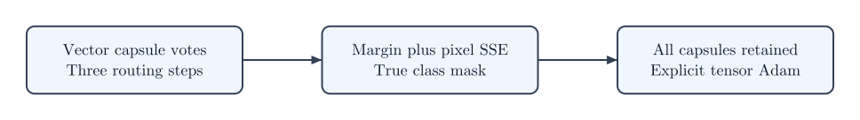
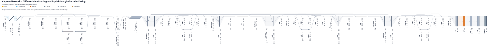
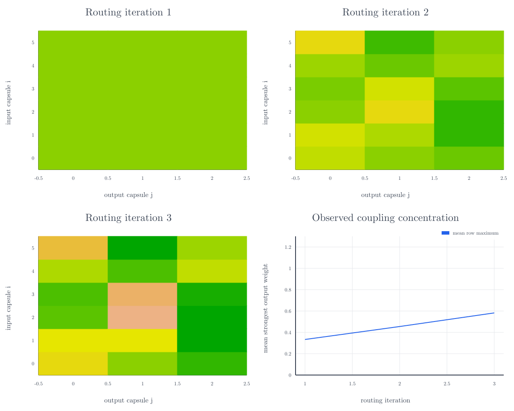
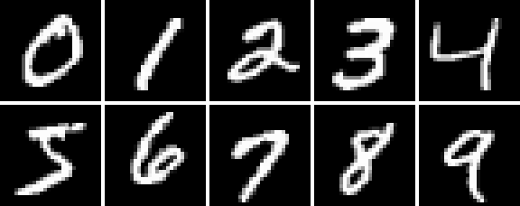
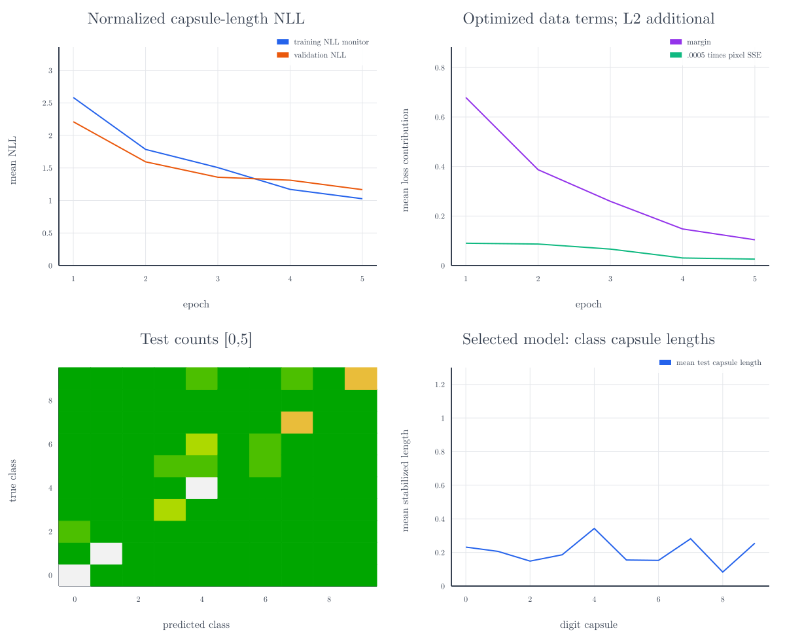
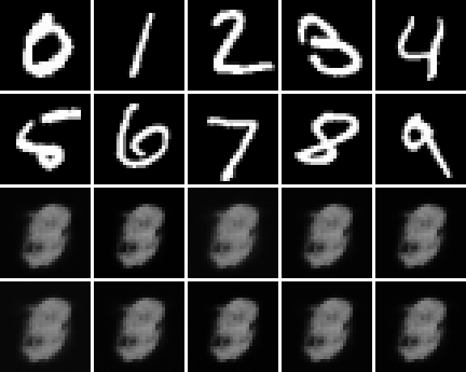
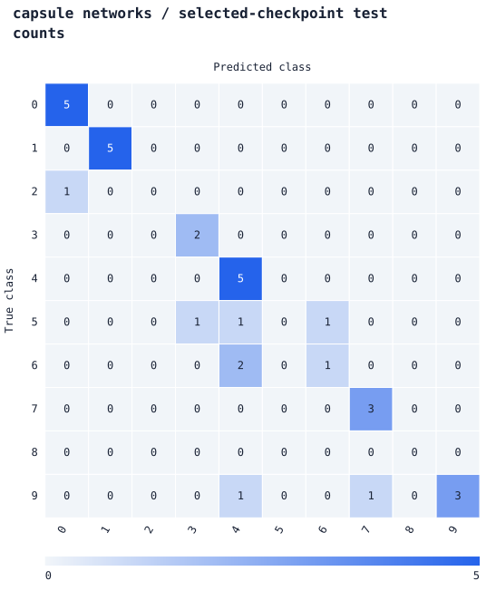

Capsule Networks: Differentiable Routing and Explicit Margin/Decoder Fitting
Abstract
Vector capsules vote for output entities, route by agreement and squash their lengths. We check routing against an independent oracle, verify the full MNIST network and decoder, then expose every Adam update for margin, reconstruction and kernel regularization.
Source example: examples/cpp/source/nn/1_convolutional_neural_networks/1.5_attention_and_modern_convnets/capsule_networks.cpp.
The method
Squash maps a vector s to (norm²/(1+norm²))*s/sqrt(norm²+epsilon), with epsilon 1e-9 here. It preserves direction; the familiar unregularized length norm²/(1+norm²) is approximate near zero because of epsilon. Zero vectors and their first derivatives remain finite zero. CapsuleLengths separately computes sqrt(sum(v²)+1e-9), giving a positive floor sqrt(1e-9).
For votes uhat_ij=W_ij*u_i, routing starts with b_ij=0 and repeats c=softmax_j(b), s_j=sum_i(c_ij*uhat_ij), v_j=Squash(s_j), then b_ij+=dot(uhat_ij,v_j) except after the last iteration. Couplings normalize over OUTPUT capsules. Every iteration stays in the tensor graph, including agreement updates; no stop-gradient or optimizer is hidden in routing. Its loop is forward computation, distinct from the explicit learned-parameter optimizer below. The toy’s changing concentration is observed, not a universal monotonicity theorem.
The complete MNIST network uses VALID 9×9/256/ReLU (20×20), then 9×9/2/256 to form 6×6×32 primary eight-dimensional capsules (1152 total). Three routing iterations produce ten 16D digit capsules. Vote weights start from N(0,.01), convolutions from He-uniform. Log stabilized lengths serve as logits: softmax gives lengths normalized across classes, which is a scoring convention, not a calibration guarantee. Without a decoder the model has 6804224 learned scalars; with it 8215568. The decoder masks 160 digit coordinates, then uses Glorot dense 512/ReLU,1024/ReLU and784/sigmoid. Its closure borrows the parameter store; all decoder leaves exist before optimizer construction, and fresh graphs are built after updates.
Training minimizes this margin PLUS .0005 times mean summed-pixel reconstruction SSE and .0001/2 times the sum of squared kernels. The decoder uses TRUE-class masks while fitting. NLL of normalized lengths only monitors and selects validation checkpoints; the loop does not silently replace margin fitting with cross entropy. Test reconstructions use PREDICTED masks. Native Float64 finite differences verify gradients through routing inputs/vote weights, and the full-model probe checks every parameter derivative with and without the decoder.
The visible run retains all capsules, widths, three routing iterations and decoder layers. It uses 64 fit/32 validation/32 official-test original MNIST images, five batch-eight epochs, Adam(.001), no augmentation and the explicit L2/reconstruction terms above. All preprocessing, model, losses and updates use tensor operations; host arrays appear only in the independent small routing oracle and plots. This bounded single-seed fit does not reproduce the paper's all-data training, shift augmentation, overlapping-digit results or reported MNIST error.
The concept diagram below is drawn by dm::graphics::Diagram. Its editable C++
source is the complete block below; regeneration uses the same datamunge toolchain
as the numerical examples. Exports consume the saved local SVG.
#include <dm/dm.hpp>
int main() {
std::filesystem::create_directories("build");
dm::graphics::Diagram diagram;
diagram.node("n0", {0.0, 0}, "Vector capsule votes\nThree routing steps");
diagram.node("n1", {5.2, 0}, "Margin plus pixel SSE\nTrue class mask");
diagram.node("n2", {10.4, 0}, "All capsules retained\nExplicit tensor Adam");
diagram.edge("n0", "n1").edge("n1", "n2");
diagram.save_svg("build/capsule_networks_concept.svg");
}
Executed tensor architecture
The displayed output is the capsule classifier; the separately trained reconstruction objective is not included in its reachable parameter count.
This figure executes the inference configuration shown in the code, using a zero-valued shape probe without fitting or loading a checkpoint. Named stage boundaries group whole subgraphs where available; other nodes retain functional-layer detail. Exact batch-inclusive shapes and reachable parameter totals come from the trace. Shared linear scales map spatial dimensions and channel counts to blocks; the one-pixel visibility floor is disclosed in the legend. Labels use compact monospace text, rotate counterclockwise and sit beside their own glyphs. Arrows flow left to right; wide diagrams scroll at native size on the website.
#include <dm/dm.hpp>
int main() {
namespace n = dm::nn;
namespace m = n::models;
n::set_num_threads(2);
std::filesystem::create_directories("build");
n::ParameterStore p(17);
n::Module architecture_model(
[&](const n::Tensor& image) { return m::CapsNet(p, image, 3, true).logits; },
"Capsule Networks: Differentiable Routing and Explicit Margin/Decoder Fitting");
n::ModelPlotOptions options;
options.style = n::ModelPlotStyle::Flow;
options.detail = n::ModelPlotDetail::Blocks;
options.labels = {.type = n::ModelPlotLabel::NameAndShape, .size = 12, .wrap = 24};
options.spacing = {.layer = 24, .lane = 12, .label = 8, .margin = 20};
options.sizing.spatial_size = 96;
options.sizing.channel_size = 42;
options.sizing.minimum_extent = 1;
options.opacity = .8;
const auto diagram = architecture_model.plot(n::zeros({1, 28, 28, 1}), options);
diagram.save_svg("build/capsule_networks_architecture.svg");
std::print(
"{} displayed nodes; {} reachable learned values.\n",
diagram.nodes().size(),
diagram.parameter_count());
}65 displayed nodes; 6804224 reachable learned values.

Small routing example and independent oracle
#include <dm/dm.hpp>
int main() {
namespace n = dm::nn;
const auto type = n::DType::Float64;
const auto u = (1.3 * n::sin(.37 * n::arange(0, 12).to(type) + .2)).reshape({1, 6, 2}),
weights = n::sin(.37 * n::arange(0, 108).to(type) + .7).reshape({6, 9, 2});
const auto actual = n::models::DynamicRouting(u, weights, 6, 3, 2, 3, 3);
const auto input = u.to_vector<double>(), w = weights.to_vector<double>();
std::vector<double> votes(6 * 3 * 3), logits(6 * 3), couplings(6 * 3), capsules(3 * 3);
for (int i = 0; i < 6; ++i)
for (int j = 0; j < 3; ++j)
for (int d = 0; d < 3; ++d)
for (int k = 0; k < 2; ++k)
votes[(i * 3 + j) * 3 + d] += w[(i * 9 + j * 3 + d) * 2 + k] * input[i * 2 + k];
double error = 0;
// Independent host oracle only; model votes and routing use tensor operations.
for (int t = 0; t < 3; ++t) {
for (int i = 0; i < 6; ++i) {
double high = -std::numeric_limits<double>::infinity(), total = 0;
for (int j = 0; j < 3; ++j)
high = std::max(high, logits[i * 3 + j]);
for (int j = 0; j < 3; ++j) {
couplings[i * 3 + j] = std::exp(logits[i * 3 + j] - high);
total += couplings[i * 3 + j];
}
for (int j = 0; j < 3; ++j)
couplings[i * 3 + j] /= total;
}
for (int i = 0; i < 18; ++i)
error =
std::max(error, std::abs(actual.history[t].reshape({18}).at({i}) - couplings[i]));
std::fill(capsules.begin(), capsules.end(), 0);
for (int i = 0; i < 6; ++i)
for (int j = 0; j < 3; ++j)
for (int d = 0; d < 3; ++d)
capsules[j * 3 + d] += couplings[i * 3 + j] * votes[(i * 3 + j) * 3 + d];
for (int j = 0; j < 3; ++j) {
double norm2 = 0;
for (int d = 0; d < 3; ++d)
norm2 += capsules[j * 3 + d] * capsules[j * 3 + d];
const double scale = norm2 / (1 + norm2) / std::sqrt(norm2 + 1e-9);
for (int d = 0; d < 3; ++d)
capsules[j * 3 + d] *= scale;
}
if (t < 2)
for (int i = 0; i < 6; ++i)
for (int j = 0; j < 3; ++j)
for (int d = 0; d < 3; ++d)
logits[i * 3 + j] += votes[(i * 3 + j) * 3 + d] * capsules[j * 3 + d];
}
for (int i = 0; i < 9; ++i)
error = std::max(error, std::abs(actual.capsules.reshape({9}).at({i}) - capsules[i]));
if (error > 1e-12)
return 1;
auto layout = dm::graphics::RLayout::create(2, 2);
std::vector<double> peak;
for (int t = 0; t < 3; ++t) {
const auto c = actual.history[t];
if (n::max(n::abs(n::sum(c, {2}) - 1)).item() > 1e-12)
return 1;
peak.push_back(n::mean(n::max(c, {2})).item());
layout.add(n::plot_tensor_map(n::reverse(c.reshape({6, 3}), {0}), 0, 1)
.title("Routing iteration " + std::to_string(t + 1))
.x_label("output capsule j")
.y_label("input capsule i")
.x_limits(-.5, 2.5)
.y_limits(-.5, 5.5));
}
auto concentration = dm::graphics::RPlot::create();
concentration.lines({1, 2, 3}, peak, "mean row maximum", {37, 99, 235})
.title("Observed coupling concentration")
.x_label("routing iteration")
.y_label("mean strongest output weight")
.y_limits(0, 1.3);
layout.add(concentration);
std::filesystem::create_directories("build");
layout.size(1200, 960).fit_panels().save_svg("build/capsule_networks_routing.svg");
std::print("Three tensor routing iterations agree with stable host vote/squash/agreement "
"oracle; maximum error {:.12f}. Couplings normalize over output capsules; this "
"fixture's mean maxima are {:.6f}, {:.6f}, {:.6f}. Concentration is an "
"observation, not a universal monotonicity guarantee.\n",
error, peak[0], peak[1], peak[2]);
}Three tensor routing iterations agree with stable host vote/squash/agreement oracle; maximum error 0.000000000000. Couplings normalize over output capsules; this fixture's mean maxima are 0.333333, 0.454727, 0.582321. Concentration is an observation, not a universal monotonicity guarantee.

Regularized squash, margin and full topology
#include <dm/dm.hpp>
int main() {
namespace n = dm::nn;
const auto type = n::DType::Float64;
const auto zero = n::zeros({2, 3, 4}, type).requires_grad_();
const auto squashed = n::models::Squash(zero);
if (n::max(n::abs(squashed)).item() != 0 ||
n::max(n::abs(n::grad(n::sum(squashed), {zero})[0])).item() != 0)
return 1;
const auto lengths =
n::from_vector(std::vector<double>{.8, .2, .05}, {1, 3}).requires_grad_(),
target = n::from_vector(std::vector<double>{1, 0, 0}, {1, 3});
const auto loss = n::models::MarginLoss(lengths, target);
const auto derivative = n::grad(loss, {lengths})[0];
if (std::abs(loss.item() - .015) > 1e-15 || std::abs(derivative.at({0, 0}) + .2) > 1e-15 ||
std::abs(derivative.at({0, 1}) - .1) > 1e-15 || derivative.at({0, 2}) != 0)
return 1;
n::set_num_threads(2);
const auto x = (.5 + .5 * n::sin(.37 * n::arange(0, 2 * 28 * 28).to(n::DType::Float32)))
.reshape({2, 28, 28, 1});
for (bool decoder : {false, true}) {
n::ParameterStore p(17);
const auto out = n::models::CapsNet(p, x, 3, decoder);
if (p.count() != (decoder ? 8215568 : 6804224) ||
out.primary.shape() != n::Shape{2, 1152, 8} ||
out.digits.shape() != n::Shape{2, 10, 16})
return 1;
const auto mask = n::one_hot(n::tensor({1, 2}).to(n::DType::Int64), 10);
auto objective = n::models::MarginLoss(out.lengths, mask);
if (decoder) {
const auto reconstructed = out.reconstruct(mask);
if (reconstructed.shape() != n::Shape{2, 784})
return 1;
objective = objective +
.0005 * n::mean(n::sum(n::square(reconstructed - x.reshape({2, 784})), {1}));
}
const auto derivatives = n::grad(objective, p.parameters());
for (const auto &d : derivatives)
if (!std::isfinite(n::sum(n::abs(d)).item()))
return 1;
std::print(
"Decoder={}: {} complete learned scalars, {} finite parameter-tensor gradients; "
"primary1152x8, digit10x16, all three routing iterations retained.\n",
decoder, p.count(), derivatives.size());
}
std::print("Zero-vector squash and its derivative are finite zero. Known margin .015 has "
"length derivatives [-.2,.1,0]. Native finite differences verify both input "
"capsules and vote weights through agreement iterations.\n");
}Decoder=false: 6804224 complete learned scalars, 5 finite parameter-tensor gradients; primary1152x8, digit10x16, all three routing iterations retained. Decoder=true: 8215568 complete learned scalars, 11 finite parameter-tensor gradients; primary1152x8, digit10x16, all three routing iterations retained. Zero-vector squash and its derivative are finite zero. Known margin .015 has length derivatives [-.2,.1,0]. Native finite differences verify both input capsules and vote weights through agreement iterations.
Original digits and explicit optimization
#include <dm/dm.hpp>
int main() {
namespace n = dm::nn;
std::filesystem::path cache;
if (const auto *p = std::getenv("DATAMUNGE_DATA_DIR"))
cache = p;
else if (const auto *p = std::getenv("XDG_CACHE_HOME"))
cache = std::filesystem::path(p) / "datamunge/datasets";
else
cache = std::filesystem::path(std::getenv("HOME")) / ".cache/datamunge/datasets";
dm::datasets::fetch("mnist", (cache / "mnist").string());
const auto data = n::load_mnist((cache / "mnist").string(), "train");
const auto images = data.images, labels = data.labels;
std::vector<int64_t> rows;
for (int cls = 0; cls < 10; ++cls) {
for (int64_t row = 0; row < labels.numel(); ++row)
if (labels.at({row}) == cls) {
rows.push_back(row);
break;
}
}
if (rows.size() != 10)
return 1;
std::filesystem::create_directories("build");
n::save_image_grid(n::take_rows(images, rows), "build/capsule_networks_inputs.png", 5, 0.,
1., 4, 1., 4);
std::print("One original cached training image per class, IDs 0..4 then 5..9.\n");
}One original cached training image per class, IDs 0..4 then 5..9.

#include <dm/dm.hpp>
int main() {
int rendered_confusions = 0;
namespace n = dm::nn;
n::set_num_threads(2);
std::filesystem::path cache;
if (const auto* p = std::getenv("DATAMUNGE_DATA_DIR"))
cache = p;
else if (const auto* p = std::getenv("XDG_CACHE_HOME"))
cache = std::filesystem::path(p) / "datamunge/datasets";
else
cache = std::filesystem::path(std::getenv("HOME")) / ".cache/datamunge/datasets";
dm::datasets::fetch("mnist", (cache / "mnist").string());
const auto raw = n::load_mnist((cache / "mnist").string(), "train"),
official = n::load_mnist((cache / "mnist").string(), "test");
const auto tx = n::slice_axis(raw.images, 0, 0, 64), ty = n::slice_axis(raw.labels, 0, 0, 64),
vx = n::slice_axis(raw.images, 0, 64, 96), vy = n::slice_axis(raw.labels, 0, 64, 96),
qx = n::slice_axis(official.images, 0, 0, 32),
qy = n::slice_axis(official.labels, 0, 0, 32);
n::ParameterStore p(17);
{
n::NoGradGuard guard;
n::models::CapsNet(p, n::zeros({1, 28, 28, 1}), 3, true);
}
if (p.count() != 8215568)
return 1;
n::OptimizerConfig options;
options.kind = n::OptimizerKind::Adam;
n::Optimizer optimizer(p, .001, options);
n::BatchOrder batches(64, 8, 2026);
std::filesystem::create_directories("build");
const std::string checkpoint = "build/capsule_networks_best_params.npz";
double best = std::numeric_limits<double>::infinity();
int best_epoch = 0;
std::vector<double> epochs, train_nll, validation, margin_trace, reconstruction_trace;
for (int epoch = 1; epoch <= 5; ++epoch) {
batches.begin_epoch();
n::WeightedMean nll_average, margin_average, reconstruction_average;
for (auto rows = batches.next(); !rows.empty(); rows = batches.next()) {
const auto images = n::take_rows(tx, rows), target = n::take_rows(ty, rows),
mask = n::one_hot(target, 10);
const auto out = n::models::CapsNet(p, images, 3, true);
const auto margin = n::models::MarginLoss(out.lengths, mask);
const auto reconstruction = n::mean(
n::sum(n::square(out.reconstruct(mask) - images.reshape({images.size(0), 784})), {1}));
// Fit margin + summed-pixel reconstruction + explicit kernel L2. NLL is monitoring/selection
// only.
auto objective = margin + .0005 * reconstruction;
for (const auto& w : p.parameters())
if (w.dim() >= 2)
objective = objective + .00005 * n::sum(n::square(w));
const double nll = n::sparse_softmax_cross_entropy(out.logits, target).item();
optimizer.minimize(objective);
nll_average.add(nll, rows.size());
margin_average.add(margin.item(), rows.size());
reconstruction_average.add(reconstruction.item(), rows.size());
}
n::NoGradGuard guard;
const double val =
n::sparse_softmax_cross_entropy(n::models::CapsNet(p, vx, 3, true).logits, vy).item();
if (!std::isfinite(val))
return 1;
epochs.push_back(epoch);
train_nll.push_back(nll_average.value());
validation.push_back(val);
margin_trace.push_back(margin_average.value());
reconstruction_trace.push_back(.0005 * reconstruction_average.value());
if (val < best) {
best = val;
best_epoch = epoch;
p.save(checkpoint);
}
}
p.load(checkpoint);
n::NoGradGuard guard;
const auto selected = n::models::CapsNet(p, qx, 3, true);
const double test_nll = n::sparse_softmax_cross_entropy(selected.logits, qy).item(),
fit_nll =
n::sparse_softmax_cross_entropy(n::models::CapsNet(p, tx, 3, true).logits, ty)
.item(),
test_margin = n::models::MarginLoss(selected.lengths, n::one_hot(qy, 10)).item();
if (!std::isfinite(test_nll))
return 1;
const auto predicted_mask = n::one_hot(n::argmax(selected.logits, 1), 10);
const double test_sse =
n::mean(n::sum(n::square(selected.reconstruct(predicted_mask) - qx.reshape({32, 784})), {1}))
.item();
const auto confusion = n::matmul(n::transpose(n::one_hot(qy, 10), {1, 0}), predicted_mask);
n::save_npz("build/capsule_networks_heldout_"+std::to_string(rendered_confusions)+".npz",{{"truth",qy},{"logits",selected.logits},{"counts",confusion.to(n::DType::Int64)}});
n::ConfusionMatrix::from_counts(confusion.to(n::DType::Int64))
.save_svg(
"build/capsule_networks_confusion_api_" + std::to_string(rendered_confusions++) + ".svg",
{.title = "capsule networks / selected-checkpoint test counts"});
if (n::sum(confusion).item() != 32)
return 1;
auto score = dm::graphics::RPlot::create(), terms = dm::graphics::RPlot::create();
const double score_high = 1.3 * std::max(
*std::max_element(train_nll.begin(), train_nll.end()),
*std::max_element(validation.begin(), validation.end()));
score.lines(epochs, train_nll, "training NLL monitor", {37, 99, 235})
.lines(epochs, validation, "validation NLL", {234, 88, 12})
.title("Normalized capsule-length NLL")
.x_label("epoch")
.y_label("mean NLL")
.y_limits(0, score_high);
const double term_high =
1.3 * std::max(
*std::max_element(margin_trace.begin(), margin_trace.end()),
*std::max_element(reconstruction_trace.begin(), reconstruction_trace.end()));
terms.lines(epochs, margin_trace, "margin", {147, 51, 234})
.lines(epochs, reconstruction_trace, ".0005 times pixel SSE", {16, 185, 129})
.title("Optimized data terms; L2 additional")
.x_label("epoch")
.y_label("mean loss contribution")
.y_limits(0, term_high);
auto counts = n::plot_tensor_map(n::reverse(confusion, {0}), 0, n::max(confusion).item());
counts.title("Test counts [0," + std::to_string(static_cast<int>(n::max(confusion).item())) + "]")
.x_label("predicted class")
.y_label("true class")
.x_limits(-.5, 9.5)
.y_limits(-.5, 9.5);
auto magnitudes = dm::graphics::RPlot::create();
magnitudes
.lines(
n::arange(0, 10).to_vector<double>(),
n::mean(selected.lengths, {0}).to_vector<double>(),
"mean test capsule length",
{37, 99, 235})
.title("Selected model: class capsule lengths")
.x_label("digit capsule")
.y_label("mean stabilized length")
.y_limits(0, 1.3);
dm::graphics::RLayout::create(2, 2)
.add(score)
.add(terms)
.add(counts)
.add(magnitudes)
.size(1200, 980)
.fit_panels()
.save_svg("build/capsule_networks_training.svg");
std::print(
"64 fit /32 validation /32 official-test rows, {} learned scalars, {} explicit "
"Adam updates. Selected epoch {}; validation NLL {:.6f}, inference fit NLL "
"{:.6f}, test NLL {:.6f}, test accuracy {:.6f}, test margin {:.6f}, "
"predicted-mask reconstruction SSE {:.6f}.\n",
p.count(),
optimizer.iterations(),
best_epoch,
best,
fit_nll,
test_nll,
n::accuracy(selected.logits, qy),
test_margin,
test_sse);
}64 fit /32 validation /32 official-test rows, 8215568 learned scalars, 40 explicit Adam updates. Selected epoch 5; validation NLL 1.166198, inference fit NLL 0.947305, test NLL 1.491146, test accuracy 0.750000, test margin 0.259784, predicted-mask reconstruction SSE 53.478474.

Selected decoder behavior
#include <dm/dm.hpp>
int main() {
namespace n = dm::nn;
n::set_num_threads(2);
std::filesystem::path cache;
if (const auto *p = std::getenv("DATAMUNGE_DATA_DIR"))
cache = p;
else if (const auto *p = std::getenv("XDG_CACHE_HOME"))
cache = std::filesystem::path(p) / "datamunge/datasets";
else
cache = std::filesystem::path(std::getenv("HOME")) / ".cache/datamunge/datasets";
dm::datasets::fetch("mnist", (cache / "mnist").string());
const auto data = n::load_mnist((cache / "mnist").string(), "test");
std::vector<int64_t> rows;
for (int digit = 0; digit < 10; ++digit) {
bool found = false;
for (int row = 0; row < 64; ++row)
if (data.labels.at({row}) == digit) {
rows.push_back(row);
found = true;
break;
}
if (!found)
return 1;
}
const auto images = n::take_rows(data.images, rows);
n::NoGradGuard guard;
n::ParameterStore p(17);
n::models::CapsNet(p, n::zeros({1, 28, 28, 1}), 3, true);
p.load("build/capsule_networks_best_params.npz");
const auto out = n::models::CapsNet(p, images, 3, true);
const auto reconstructed =
out.reconstruct(n::one_hot(n::argmax(out.logits, 1), 10)).reshape({10, 28, 28, 1});
std::filesystem::create_directories("build");
n::save_image_grid(n::concat({images, reconstructed}, 0),
"build/capsule_networks_reconstructions.png", 5, 0., 1., 4, 1., 4);
std::print("Top two rows: real test digits in class order0-9. Bottom two: "
"selected-checkpoint reconstructions masked by PREDICTED class, not true labels. "
"Unclear or wrong reconstructions remain visible.\n");
}Top two rows: real test digits in class order0-9. Bottom two: selected-checkpoint reconstructions masked by PREDICTED class, not true labels. Unclear or wrong reconstructions remain visible.

Observed subset result
Validation selected epoch 5, the last of the five, so this 40-update run ended before validation NLL stopped improving: validation NLL 1.166203, inference fit NLL 0.947312, test NLL 1.491150 and 24/32 correct test predictions (75%). Test margin is 0.259784 and mean predicted-mask reconstruction SSE is 53.478485 per image. The decoder gallery remains blurry and similar across inputs. The short fit does not reproduce paper accuracy or high-quality reconstruction.
Native confusion matrices
These matrices use the held-out predictions from the executed program above.
The native ConfusionMatrix SVG API labels exact counts with true classes
running from top to bottom and predicted classes from left to right.

Regenerate adjacent views from this run
#include <dm/dm.hpp>
int main(){std::filesystem::copy_file("build/capsule_networks_confusion_api_0.svg","build/export_capsule_networks_confusion_api_0.svg",std::filesystem::copy_options::overwrite_existing);}Conclusion
Differentiable agreement routing preserves the vector structure while an explicit outer optimizer learns every filter, vote matrix and decoder layer. Component-wise loss traces, held-out scoring and predicted-mask reconstructions expose what the bounded complete model actually learned without treating lengths as calibrated probabilities or claiming paper accuracy.
References
- [Sabour, Frosst and Hinton (2017), Dynamic Routing Between Capsules](https://arxiv.org/abs/1710.09829).
- [MNIST dataset](https://yann.lecun.org/exdb/mnist/).